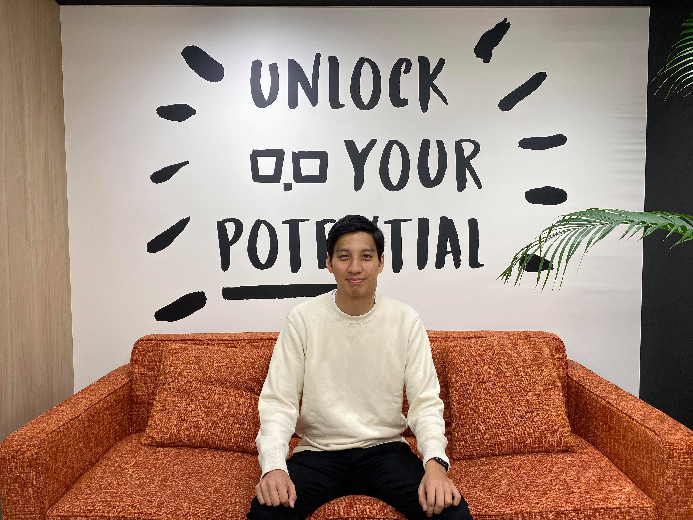

POTEPAN CAMPとは
卒業生の多くがWebエンジニアに転職成功している、実績豊富なプログラミングスクール。 優秀なレビュアー陣と実践的なカリキュラムで、現場で求められる開発スキルを身につけることが可能です。
POTEPAN CAMPの特徴
POTEPAN CAMPが選ばれる理由
01
豊富な転職実績
転職サポート希望者の多くが Web系エンジニアとして転職成功しております。
10000人以上の利用者を抱える転職サポートサービスを運営する当社だからこそ、
企業の求めている人材像に即した教育カリキュラムを反映できます。
転職先企業の例


02
多くの受講者受入実績
サービス開始以降、累計700人以上がポテパンキャンプを受講。


03
現役エンジニアが講師
サービス開始以降、50人以上の現役エンジニアが講師として活躍中。
株式会社grooves
Railsエンジニア
株式会社free
Railsエンジニア
株式会社Readyfor
Railsエンジニア
POTEPAN CAMPの選べるコース
POTEPAN CAMPでは複数のコースから目的別で選べる
サービスの想い
ポテパンのプログラミング学習についてかける想い

受講生の声
当スクールの卒業生にインタビュー
-

選抜クラス ビギナーコース
S.Yさん
前職：コンサルティングファーム
コンサルティングファームからスタートアップにWebエンジニアとして転職したS.Yさん。 全くの異業種からエンジニアに転職された背景についてお伺いしました！
-

選抜クラス キャリアコース
S.Kさん
前職：大手日系メーカーの経理
大手日系メーカーの経理から、不動産テックスタートアップのRailsエンジニアに転職成功されたS.Kさん。 ポテパンキャンプで身につけたことが実際の開発現場でも活かされているようです！
-

選抜クラス キャリアコース
S.Yさん
前職：大手自動車メーカー
大手自動車メーカーから全くの異業種であるRailsエンジニアに転職成功されたS.Yさん。 ポテパンキャンプ受講の理由や現在の業務内容についてもお伺いしました！
POTEPANが運用するサービス
ポテパンのサイトをチェック